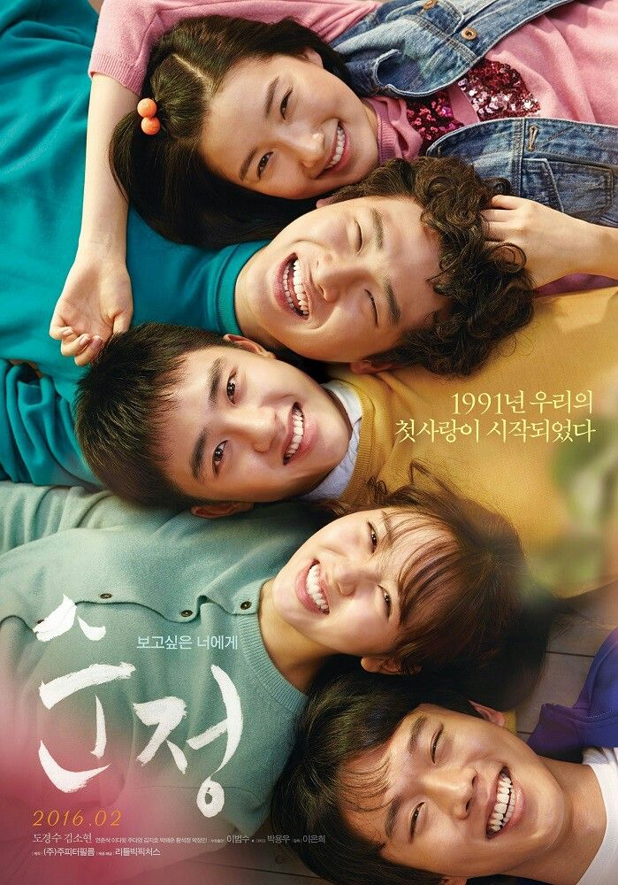

Películas Coreanas
El cine coreano ha conquistado al mundo con sus historias únicas, sus personajes profundos y sus giros inesperados. Desde películas de acción intensas hasta dramas que nos hacen reflexionar sobre la vida, han logrado crear una oferta cinematográfica tan variada como emocionante. Ya sea que busques reír, llorar o vivir una aventura emocionante, las películas coreanas tienen algo para todos.
Mejores películas coreanas recomendadas
-

Parasite (2019) Suspenso/Crimen
Dirigida por Bong Joon-ho, es una obra maestra que hizo historia al ganar el Oscar a Mejor Película en 2020. La película combina drama, comedia y suspenso para contar la historia de dos familias de clases sociales muy diferentes: los pobres Kim, quienes se infiltran en la vida de los ricos Park, en una serie de eventos que rápidamente se salen de control.
-

Forgotten (2017) Suspenso/Misterio
Es un thriller psicológico lleno de misterio y drama. La historia sigue a Jin Seok, quien vive una vida tranquila hasta que su hermano desaparece repentinamente. Cuando el hermano regresa, sin recordar nada de lo sucedido, Jin Seok comienza a descubrir secretos oscuros que lo sumergen en una serie de eventos inquietantes. A medida que avanza, la película mantiene al espectador atrapado con sus giros sorprendentes y su atmósfera tensa.
-
El teléfono (2020) Terror/Ciencia Ficción
La historia sigue a Seo-yeon, una joven que, tras mudarse a su antigua casa, recibe una llamada telefónica de una mujer desconocida llamada Young-sook, quien vive en el mismo lugar pero 20 años atrás. Lo que comienza como una conversación aparentemente inocente se convierte rápidamente en un juego peligroso, donde las decisiones que toma Seo-yeon afectan el pasado y el futuro de manera sorprendente.
-

Pure Love (2016) Romance/Melodrama
Es una emotiva película de drama romántico que toca el corazón de los espectadores con su historia de amor y amistad. La trama sigue a Joon-gi, quien regresa a su pueblo natal años después de una tragedia que cambió su vida. Al recordar su adolescencia, recuerda a Soo-yeon, una amiga de la que estaba profundamente enamorado.
-

The Witch: Part 1. The Subversion (2018) Suspenso/Ciencia Ficción
Es un thriller de acción y ciencia ficción surcoreano que sigue a una joven llamada Ja-yoon, quien vive una vida tranquila en una granja después de escapar de un oscuro y misterioso experimento en su infancia. Su vida da un giro inesperado cuando es reclutada por un programa de televisión, donde demuestra habilidades excepcionales que llaman la atención de poderosos intereses.
-

Train to Busan (2016) Acción/Terror
Es un thriller que combina la tensión de una película de zombis con una conmovedora historia humana. La trama sigue a Seok-woo, un hombre de negocios que viaja con su hija a Busan en un tren, sin saber que una epidemia de zombis ha comenzado a arrasar el país. Lo que comienza como un viaje común rápidamente se convierte en una lucha desesperada por la supervivencia.
-

Memories of Murder (2003) Suspenso/Crimen
Es un thriller de crimen dirigido por Bong Joon-ho, basado en hechos reales ocurridos en Corea del Sur durante los años 80 y principios de los 90. La película sigue a dos detectives, Park Doo-man y Soo-hyuk, mientras investigan una serie de asesinatos de mujeres en una pequeña localidad. A medida que la investigación avanza, los detectives se enfrentan a la frustración de no encontrar pistas claras, mientras se intensifican las presiones tanto externas como internas.
-
Identidad Desbloqueada (2023) Suspenso/Crimen
La trama sigue a Na-mi, una joven que, tras perder su teléfono móvil, descubre que un desconocido lo ha encontrado e instalado un software espía. Este programa le permite al intruso conocer todos sus movimientos y datos personales, acercándose a ella bajo una falsa identidad.
-
The Witness (2018) Suspenso/Crimen
Es un thriller de crimen y suspenso. La historia sigue a Sang-Hoon, un hombre común que, una noche desde su departamento, presencia el asesinato de una mujer a manos de Tae-Ho. Temiendo por su seguridad, Sang-Hoon decide no informar a la policía, pero pronto descubre que el asesino lo ha visto y comienza a acecharlo, poniendo en peligro a él y a su familia.
Estas son solo algunas de las muchas películas coreanas que valen la pena ver. Algunas te van a emocionar, otras te van a dejar pensando, y muchas seguro te van a sorprender. Si tenés otras recomendaciones o alguna favorita que no está en la lista, podés dejar tus sugerencias en nuestras redes.